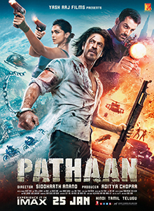

Produced by Aditya Chopra of Yash Raj Films,[5] principal photography for Pathaan began in November 2020 in Mumbai. The film was shot over various locations in India, Afghanistan, Spain, UAE, Turkey, Russia, Italy and France. Two songs were composed by the duo Vishal–Shekhar, while Sanchit Balhara and Ankit Balhara provided the score. The film was made on an estimated production budget of ₹225 crore (US$28 million) with a further ₹15 crore (US$1.9 million) spent on print and advertising.[3] Against the norm, pre-release publicity was limited with no media interaction or public events.
